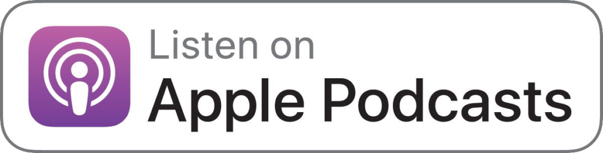

Weiss Abgleich
by Lin Hierse, Jasmin Kalarickal, Saskia Hödl, Malaika Rivuzumwami & Lalon Sander
Im taz-Podcast Weißabgleich werfen wir, eine Gruppe von People of Color in der taz, den nicht-weißen Blick auf das politische Tagesgeschehen und unseren Alltag. Die taz-Redakteur:innen Lin Hierse, Jasmin Kalarickal, Saskia Hödl, Malaika Rivuzumwami und Lalon Sander sprechen in wechselnder Besetzung über Rassismus, Übergriffigkeit, Erfahrungen, Perspektiven und Privilegien.

Feuer und Brot
by Alice Hasters & Maximiliane Haecke
euer & Brot - hinter diesem mysteriösen Namen verbergen sich Alice und Maxi, gebürtige Kölnerinnen, kennen sich seit der fünften Klasse und unterhalten sich in ihren monatlich erscheinenden Podcastfolgen meistens irgendwo zwischen Berlin, Hamburg und Köln via Skype oder gemütlich beisammen. Alice ist freie Journalistin, Maxi arbeitet als Sprecherin. In ihrem Podcast besprechen die beiden in lockerer Atmosphäre gesellschaftlich relevante, popkulturelle und persönliche Themen wie z.B. Rap, Feminismus, Kulturelle Aneignung, Männlichkeit oder auch mal das Tabuthema der weiblichen Lust oder Menstruation.
tupodcast
by Tupoka Ogette
Der Podcast von Tupoka Ogette, Anti-Rassismustrainerin und Autorin. Gespräche zwischen Schwarzen Frauen übers (Über-)Leben, Lieben, Entdecken, (Er-)schaffen, (Er-) kämpfen, (Er-)forschen, Inspirieren und Schreiben. Über Widerstand und Heilung. Über Trauer und Hoffnung. Über Rassismus und Empowerment.

Modern Love
by The New York Times
For 16 years, the Modern Love column has given New York Times readers a glimpse into the complicated love lives of real people. Since its start, the column has evolved into a TV show, three books and a podcast. Now, we are excited to announce a relaunch of the podcast at The Times, hosted by Daniel Jones, the editor and creator of Modern Love, and Miya Lee, editor of Tiny Love Stories and Modern Love projects. Each week, we’ll bring you their favorite stories from the column’s vast archive, conversations with the authors, and a few surprises. New episodes every Wednesday.